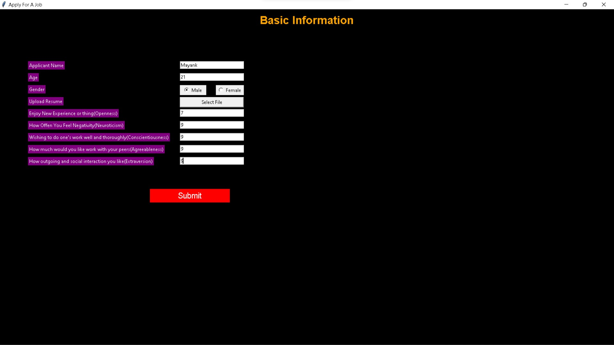
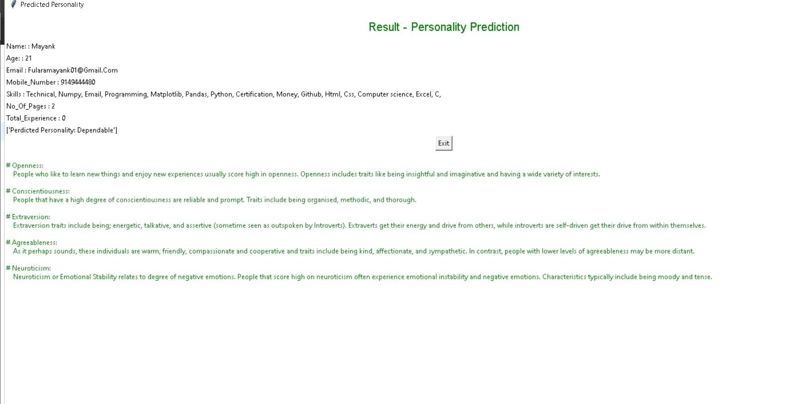
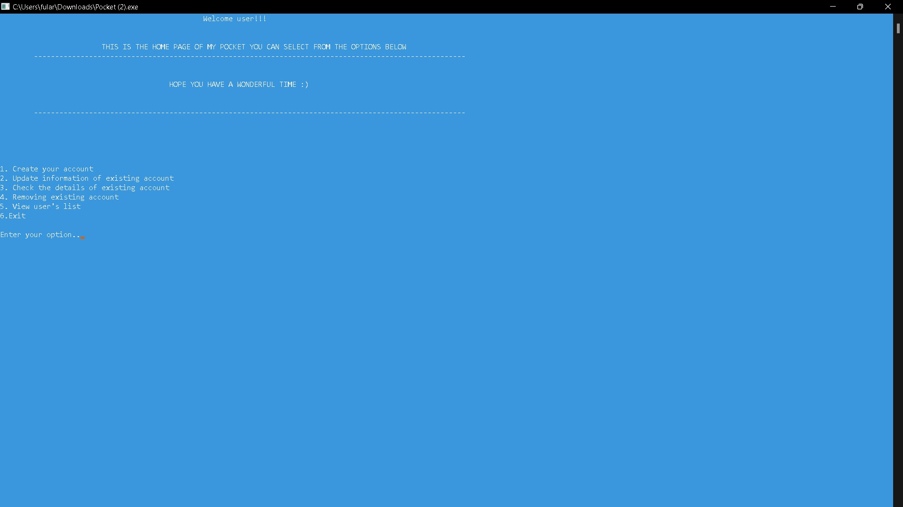

This is a description about the projects i have done
Gps logger for the Ministry of Environment, Forest and Climate Change
Dugongs are a keystone and critically endangered species, and there are very few left in our oceans, so there was a need to create a device for the conservation of dugongs
which was demanded by the Wildlife Institute of India. We created an IOT device which helped in creating India's first dugoong sanctuary in Tamil Nadu.
GPS stands for global positioning system it takes help of the satellites and it logs the position of device at regular intervals in its memory thus creating a trace where
the boat has travelled and the devices are given to the fishermen who carry them around in the waters, they are also given a data sheet where they can note the time
stamp of sighting of a dugong and now with these we have the location of dugong and the data is gathered where is the location of the species so they can be protected.
This project's components include the Node MCU ESP 8266, which connects the objects and allows data transfer via the Wi-Fi protocol, and the EM-406 GPS Receiver.
determines the location of satellites and a Neo-6M GPS chip. It can track up to 22 satellites and 50 channels and achieve the industry's highest level of sensitivity.
.jpg)
Personality Detection app from CV using python(HIRING HACK)
Hirring Hack is a personality prediction app on the basis of Lewis Goldbergs theory of OCEAN it uses NLP(natural language processsing) for the pridtion of persona;ity on the ocean basis.
 A finance managment application using c(MY POCKET MANAGER)
Designing a finance system for students to keep track of their expenses. College students are the primary target group for this initiative. Its problem statement is based on basic financial management. Designing a finance system for students to keep track of their expenses.
Spotify Clone using HTML CSS and JavaScript

This is the clone of spotify website i created using HTML CSS Javascript it allows you to select songs from playlist and you can enjoy your songs on your wish also can select next precious songs it is a responsive page.